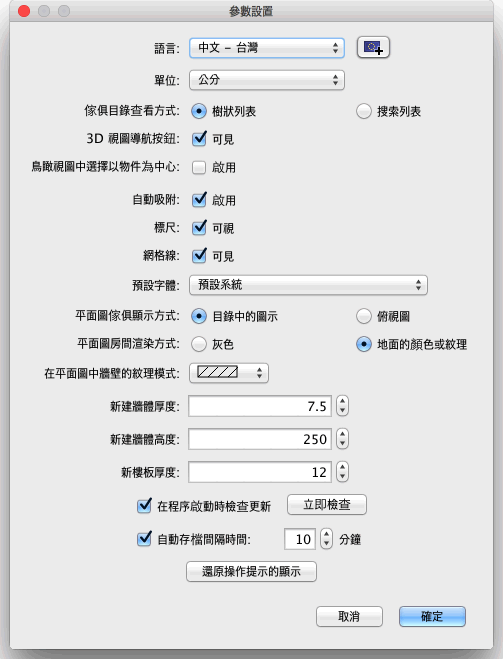

如果您要自訂 Sweet Home 3D 的參數設置，請在功能表上選擇Sweet Home 3D→參數設置...（Mac OS X）或檔案→參數設置...（其他作業系統）。

在“參數設置”視窗中，您可以選擇 Sweet Home 3D 的使用者介面使用的語言和平面圖中用於尺規、網格以及用來顯示長度和面積的單位。
當你每次使用在移動 3D 視圖虛擬觀視模式中的虛擬觀視者時，你選擇啟用“在3D移動時顯示虛擬觀視者時”，虛擬觀視者將同時顯示在繪圖的家居 2D 平面圖中。如果你不想失去當前虛擬觀視者在平面中的內容和/或更改在 3D 視圖中的每一步平面的可見部分，該選項就選取消。
使用“自動吸附”核取方塊可以啟用或禁用在平面圖中進行繪製牆體、放置傢俱等操作時的自動吸附功能。
使用“尺規”核取方塊可以設置平面圖上面和左側的尺規是否顯示。
使用“格線”核取方塊可以設置平面圖上是否顯示格線。
使用“目錄圖示”和“俯視圖”選項按鈕可以設置傢俱在平面圖中顯示的方式（參見下面的圖像）。選中“俯視圖”選項後，在“圖示尺寸”下拉清單依您選擇的尺寸，以像素為單位在二維平面圖繪製。更高的尺寸會給更好的平面像素，當在螢幕繪製、 列印和匯出為 SVG 格式時，但需要更多的記憶體空間來工作。
使用“灰色”和“地面顏色或紋理”選項按鈕可以設置平面圖中是否顯示房間地面的顏色或紋理（設置為“灰色”時房間會以白色列印）。
使用“平面圖牆體紋理”下拉式列示方塊可以設置平面圖中用於填充牆體的圖案。
“新建牆體厚度”的數值定義了繪製牆體時默認使用的牆體厚度。該設置不會影響家居模型中已有的牆體。
“新建牆體高度”的數值定義了繪製牆體時默認使用的牆體高度。該設置不會影響家居模型中已有的牆體。
在對話方塊的下面還有一個“還原操作提示的顯示”按鈕。如果您在按一下一些工具後出現的操作提示對話方塊中選擇了“以後不再顯示該提示”，那麼使用該按鈕可以將這些設置還原。也就是說，按一下該按鈕後，所有這些操作提示都會再次顯示。
 |
|
 |
默認平面圖渲染，使用
目錄圖示、灰色房間和斜線牆體填充 |
使用了傢俱俯視圖、地面顏色紋理，
並使用實心黑色填充牆體的平面圖渲染 |
|